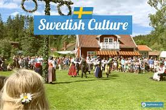

The Swedish government does not collect statistics on ethnicity in Sweden but rather categorises citizens by country of birth. Historically, the population was vastly homogeneous, mostly made up of ethnic Swedes, and people from other Scandinavian countries such as Finland and Denmark. Today, it is estimated that 5% of the population is Finnish, and a little less than 1% is Danish.1 There is also a small indigenous minority, known as the Sami, who typically live in northern Sweden. The Sami make up less than 0.3% of the population.
Sweden's ethnic composition has changed dramatically in recent decades. This is due to the large waves of international immigration that the country has received. Sweden has generally been welcoming towards refugees and committed to family reunification on a national level. Indeed, the country has accepted more refugees per capita than any other European nation. However, the government has shifted to stricter immigration restrictions as the mass influx of migrants has strained resources and altered public opinion.

The unprecedented number of newcomers has challenged Sweden economically and culturally. Rapid changes in the country have also caused some divides among the population regarding opinions about refugees and immigrants. Some citizens in Sweden strongly oppose allowing more immigrants and refugees into the country, while others are supportive. For example, one poll found that 41% of Swedes thought that the country should grant fewer residency permits to refugees.2 It is important to approach the topic about changes to Sweden's ethnic composition with sensitivity. go to first page
Along with its cultural richness Sweden is also well known with its abndon historical events throughout centuries. People occupying the Scandinavian penninsula were forced to struggle a lot in order to stay alive and survive. Historical events can be tracesd in almost every part of the the country. For more information please click on a link